EPGminer Demo
EPGminerDemo.Rmd
library(epgminer)
library(dplyr)
#>
#> Attaching package: 'dplyr'
#> The following objects are masked from 'package:stats':
#>
#> filter, lag
#> The following objects are masked from 'package:base':
#>
#> intersect, setdiff, setequal, union
library(data.table)
#>
#> Attaching package: 'data.table'
#> The following objects are masked from 'package:dplyr':
#>
#> between, first, lastIntroduction
In this demo, we will show the use of the EPGminer R package for analysis of insect EPG data. The primary goal of EPGminer is to advance analysis of insect feeding behavior using EPG by introducing a computational tool. The main utility of EPGminer is calculation of frequency via the Fourier Transform, and calculation of Relative Amplitude (voltage). This demo will take you step by step through analysis of EPG data using an example dataset.
1. Load Example Dataset
First, the dataset must be loaded. Due to the size involved with any EPG dataset, the raw data has been included in a separate package: epgdata. First install/load the epgdata package from github using devtools. Then, the EPGminer function read_epg can be used to read in both raw EPG data in “txt” files and manual annotation files with extension “ANA”.
if (!require(devtools)){
install.packages("devtools")
}
#> Loading required package: devtools
#> Warning in library(package, lib.loc = lib.loc, character.only = TRUE,
#> logical.return = TRUE, : there is no package called 'devtools'
#> Installing package into '/home/runner/work/_temp/Library'
#> (as 'lib' is unspecified)
#> also installing the dependencies 'credentials', 'zip', 'gitcreds', 'ini', 'diffobj', 'rematch2', 'gert', 'gh', 'brew', 'praise', 'waldo', 'usethis', 'pkgload', 'remotes', 'roxygen2', 'rstudioapi', 'rversions', 'testthat'
if (!require("epgdata")){
devtools::install_github("LylChun/epgdata")
}
#> Loading required package: epgdata
#> Warning in library(package, lib.loc = lib.loc, character.only = TRUE,
#> logical.return = TRUE, : there is no package called 'epgdata'
#> Using github PAT from envvar GITHUB_PAT
#> Downloading GitHub repo LylChun/epgdata@HEAD
#> * checking for file ‘/tmp/RtmpFfXO4u/remotes34dd34b9d148/LylChun-epgdata-33be0ab/DESCRIPTION’ ... OK
#> * preparing ‘epgdata’:
#> * checking DESCRIPTION meta-information ... OK
#> * checking for LF line-endings in source and make files and shell scripts
#> * checking for empty or unneeded directories
#> * building ‘epgdata_0.0.1.tar.gz’
#> Installing package into '/home/runner/work/_temp/Library'
#> (as 'lib' is unspecified)
# list raw txt files and ana file from epgdata package
datafiles = list.files(system.file("extdata", package = "epgdata"),
pattern = "txt", full.names = TRUE)
anafile <- list.files(system.file("extdata", package = "epgdata"),
pattern = "ANA", full.names = TRUE)
# read into dataframe
example_epg_unlabeled <- rbindlist(lapply(datafiles, read_epg, extension = "txt"))
example_epg_ana <- read_epg(anafile, extension = "ANA")2. Add waveform labels
To calculate Frequency and Relative Amplitude for each waveform, the annotation file must be combined with the raw data. This can be accomplished using the EPGminer function label_ana
# example_epg_unlabeled and example_epg_ana from part 1
example_epg_labeled <- label_ana(example_epg_unlabeled, example_epg_ana)3. Calculate Frequency and Relative Amplitude
Once the data has been properly labeled using the annotation file, the EPGminer functions wave_topfreq and wave_volts can be used to calculate Frequency and Relative Amplitude respectively.
frequency <- wave_topfreq(example_epg_labeled)
RA <- wave_volts(example_epg_labeled)4. Summarize results by waveform
To summarize and view the results, we take the mean value for each waveform type.
# group by waveform and take the mean
summary_freq <- frequency %>%
group_by(waveform) %>%
summarise(waveform = waveform[1], frequency = mean(frequency), .groups = "drop")
summary_ra <- RA %>%
group_by(waveform) %>%
summarise(waveform = waveform[1], relative_amplitude = mean(relative_amplitude),
.groups = "drop")
knitr::kable(summary_freq, caption = "Table of Mean Frequency by Waveform",
align = "c", digits = 2)| waveform | frequency |
|---|---|
| C | 0.80 |
| E1 | 4.59 |
| G | 2.05 |
| non-probing | 44.34 |
| pd | 1.42 |
| pd1 | 1.88 |
| pd2 | 2.73 |
knitr::kable(summary_ra, caption = "Table of Mean Relative Amplitude by Waveform",
align = "c", digits = 2)| waveform | relative_amplitude |
|---|---|
| C | 16.78 |
| E1 | 33.82 |
| G | 3.00 |
| non-probing | 0.00 |
| pd | 27.38 |
| pd1 | 26.29 |
| pd2 | 29.04 |
5. Visualize data
For further exploration, the data can also be visualized. The following three plots will show: (i) a boxpot of frequencies for each waveform type, (ii) a pie chart of time spent in each waveform type (iii) a pie chart showing the number of each waveform type.
plot_fbox(example_epg_labeled)
plot_pie(example_epg_labeled, pietype = "time")Expected Output and Run time
Expected output for each step is as follows:
Frequency and Relative Amplitude are calculated for each waveform instance and returned in a table. The frequency object is a table with columns for waveform and frequency, while the RA object is a table with columns for waveform, mean volts, SD of volts and Relative Amplitude.
Expected output is two summary tables for frequency and Relative Amplitude grouped by waveform respectively. There should be one (mean) frequency and (mean) Relative Amplitude for each waveform type.
Three plots where the first is a boxplot of frequencies and the last two are pie charts by time and number respectively.
Overall expected run time for this demo, including data reading/processing and display of visuals, is less than 1 minute.